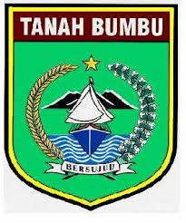

Kab. Tanah Bumbu

Desa Al-Kautsar
Selamat Datang
Portal Pelayanan & Profil Resmi Pemerintah Desa Al-Kautsar
Kecamatan Satui, Kabupaten Tanah Bumbu
Kab. Tanah Bumbu

Desa Al-Kautsar
Portal Pelayanan & Profil Resmi Pemerintah Desa Al-Kautsar
Kecamatan Satui, Kabupaten Tanah Bumbu
Harmoni antara kemajuan potensi alam dan kelestarian lingkungan hidup. Mewujudkan masyarakat yang sejahtera, religius, dan berbudaya.
Desa Al-Kautsar terletak di wilayah administratif Kecamatan Satui, Kabupaten Tanah Bumbu, Provinsi Kalimantan Selatan [1.1.9, 1.2.1]. Desa ini tumbuh seiring dengan geliat perkembangan transmigrasi dan ekspansi sektor agrikultur di Tanah Bumbu.
Nama "Al-Kautsar" yang berarti 'Nikmat yang Berlimpah' melambangkan rasa syukur para pendiri desa atas anugerah alam yang kaya dan kesuburan tanah yang diwariskan. Berawal dari pemukiman swakarsa yang teratur, warga secara bergotong-royong membangun sistem pengelolaan wilayah yang seimbang demi kemakmuran bersama.
Meskipun berada berdampingan dengan kawasan industri ekstraktif dan perkebunan sawit skala besar, Desa Al-Kautsar berhasil menunjukkan integritas lingkungan melalui keberhasilan tata kelola ruang hijau hingga memperoleh penghargaan bergengsi tingkat nasional [1.1.4, 1.1.5, 1.1.9].

"Mewujudkan Desa Al-Kautsar yang mandiri, berdaya saing, agamis, dan harmonis dalam pelestarian fungsi lingkungan hidup secara berkelanjutan."
10 Februari 2026
Diberitahukan kepada seluruh perwakilan RT dan kepala dusun untuk hadir pada musyawarah desa evaluasi aksi hijau bulanan yang bertempat di balai desa.
05 Februari 2026
Pembagian dana BLT kuartal pertama tahun ini akan diselenggarakan di aula kantor desa. Harap membawa dokumen kelengkapan berupa fotokopi KK dan KTP asli.
02 Februari 2026
Mengundang seluruh elemen warga Dusun II untuk bersama-sama melaksanakan aksi pelestarian lingkungan penanaman bibit pohon pelindung guna mendukung kesinambungan Proklim.
Data diperbarui secara otomatis melalui sinkronisasi dokumen kerja (*Live Update*).
Total Penduduk
Jumlah KK
Laki-Laki
Perempuan
Kelahiran (30 Hari)
Kematian (30 Hari)
Warga Asli
Pendatang
Mendominasi lanskap ekonomi desa, perkebunan kelapa sawit di Al-Kautsar dikelola dengan prinsip keberlanjutan, menjadi urat nadi perekonomian warga sekaligus penyerap tenaga kerja lokal maupun pendatang [1.1.9, 1.2.1].
Terdapat beberapa titik pertambangan yang beroperasi berdampingan dengan tata ruang desa [1.1.9, 1.2.1]. Pengelolaannya diawasi ketat untuk memastikan kesejahteraan ekonomi sejalan dengan kelestarian alam.
Kebanggaan Al-Kautsar adalah kemampuannya menyeimbangkan industri (sawit & tambang) dengan ekologi [1.1.9, 1.2.1]. Prestasi Proklim membuktikan komitmen warga dalam adaptasi dan mitigasi perubahan iklim secara nyata [1.1.4, 1.1.5].
Klik nama atau foto aparatur untuk melihat informasi biodata lengkap.
Kepala Desa
Sekretaris Desa
Kaur Keuangan
Kasi Pemerintahan
Kepala Dusun I
Kami sangat menghargai aspirasi Anda demi peningkatan pelayanan di Desa Al-Kautsar. Pengaduan, kritik, ataupun saran pembangunan desa dapat diajukan secara rahasia dan aman melalui formulir elektronik kami.
Isi Formulir Pengaduan Resmi